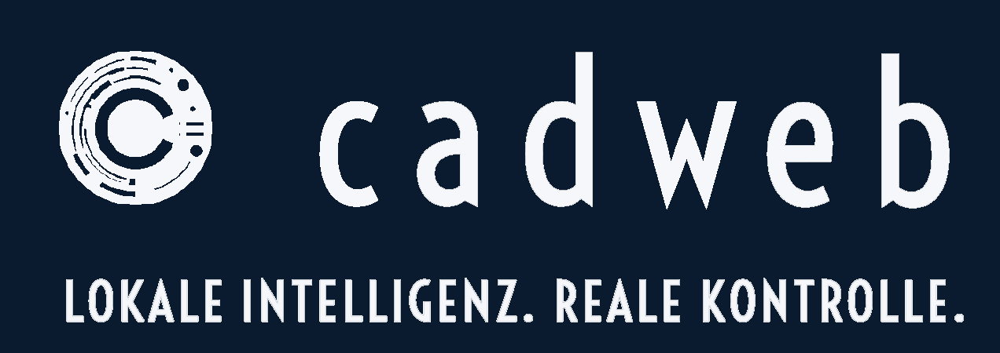

Engineering neu orchestriert
Engineering verändert sich: KI‑Agenten werden zu aktiven Partnern, digitale Zwillinge zum Standard‑Arbeitsmodus und Produktmodelle zu lebenden Systemen. Gleichzeitig wächst die Abhängigkeit von Cloud‑Plattformen – und damit die Sorge vor Kontrollverlust.
cadweb bietet die Alternative: ein modulares, offenes Ökosystem, das vollständig lokal funktioniert.
Ein wachsendes Ökosystem. Ein Werkzeugkasten für die Zukunft. Eine Architektur, die offen bleibt. Ein System, das Menschen befähigt, Engineering neu zu orchestrieren – mit lokaler Intelligenz und realer Kontrolle.